Чтение снимка, местами неуверенное. Сверьте со снимком.
29
ПРОТОКОЛ ДОПРОСА
КОРЕЦ Моисея Абрамовича
От „16“ июля 1938 года.
КОРЕЦ Моисей Абрамович 1908 г.
рожд. урожен. г. Севастополя
беспартийный, дважды исключался
[нрзб] из ВЛКСМ, до ареста до-
цент физики московского педаго-
гического института.
Вопрос: На предыдущем допросе вы признали себя винов-
ным в том, что до дня ареста активно боролись против
советской власти.
В чем конкретно выражалась ваша контрреволюционная
деятельность?
Ответ: Разрешите мне предварительно остановиться на
вопросе о том, кем и как я был привлечен к контрреволю-
ционной работе.
Вопрос: Хорошо, начните с этого.
Ответ: Работая в Харьковском физико-техническом
институте с начала 1930 г. я познакомился там и вскоре
сблизился с рядом контрреволюционно-настроенных научных
руководителей института: ЛЕЙПУНСКИМ, ОБРЕИМОВЫМ, ЛАНДАУ
РОЗЕНКЕВИЧЕМ Л.В., ГОРСКИМ, [нрзб] Л.Д. и с [нрзб]
иностранными специалистами — ВАЙСБЕРГОМ, РУЗМАНОМ М.З.
РУЗМАНОМ В.Ф. и ХАУТЕРМАНСОМ.
[нрзб]
стр. 30
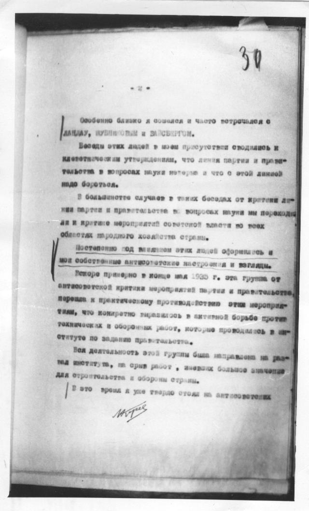
Чтение снимка, местами неуверенное. Сверьте со снимком.
30
- 2 -
Особенно близко я сошелся и часто встречался с
ЛАНДАУ, ШУБНИКОВЫМ и ВАЙСБЕРГОМ.
Беседы этих людей в моем присутствии сводились к
клеветническим утверждениям, что линия партии и прави-
тельства в вопросах науки неверна и что с этой линией
надо бороться.
В большинстве случаев в таких беседах от критики ли-
нии партии и правительства в вопросах науки мы переходи-
ли к критике мероприятий советской власти во всех
областях народного хозяйства страны.
Постепенно под влиянием этих людей оформились и
мои собственные антисоветские настроения и взгляды.
Вскоре примерно в конце мая 1935 г. эта группа от
антисоветской критики мероприятий партии и правительства
перешла к практическому противодействию этим мероприя-
тиям, что конкретно выражалось в активной борьбе против
технических и оборонных работ, которые проводились в ин-
ституте по заданию правительства.
Вся деятельность этой группы была направлена на раз-
вал института, на срыв работ, имевших большое значение
для строительства и обороны страны.
В это время я уже твердо стоял на антисоветских
[нрзб]
стр. 31
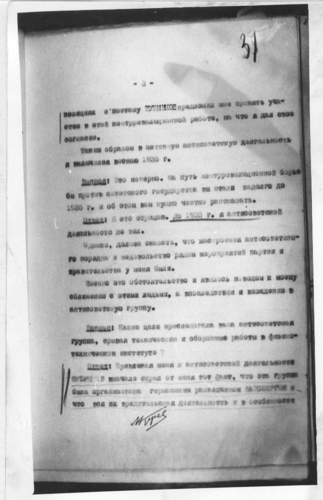
Чтение снимка, местами неуверенное. Сверьте со снимком.
31
- 3 -
[нрзб]позициях и поэтому ЛАНДАУ предложил мне принять уча-
стие в этой контрреволюционной работе, на что я дал свое
согласие.
Таким образом в активную антисоветскую деятельность
я включился весной 1936 г.
Вопрос: Это неверно. На путь контрреволюционной борь-
бы против советского государства вы стали задолго до
1935 г. и об этом вам нужно честно рассказать.
Ответ: Я это отрицаю. До 1935 г. я антисоветской
деятельности не вел.
Однако, должен сказать, что настроения антисоветско-
го порядка и недовольство рядом мероприятий партии и
правительства у меня были.
Именно это обстоятельство и явилось поводом к моему
сближению с этими людьми, а впоследствии и вхождению в
антисоветскую группу.
Вопрос: Какие цели преследовала ваша антисоветская
группа, срывая технические и оборонные работы в физико-
техническом институте?
Ответ: Привлекая меня к антисоветской деятельности
ЛАНДАУ в начале скрыл от меня тот факт, что эта группа
была организована германским разведчиком ВАЙСБЕРГОМ и,
что вся их вредительская деятельность и в особенности
[нрзб]
стр. 32
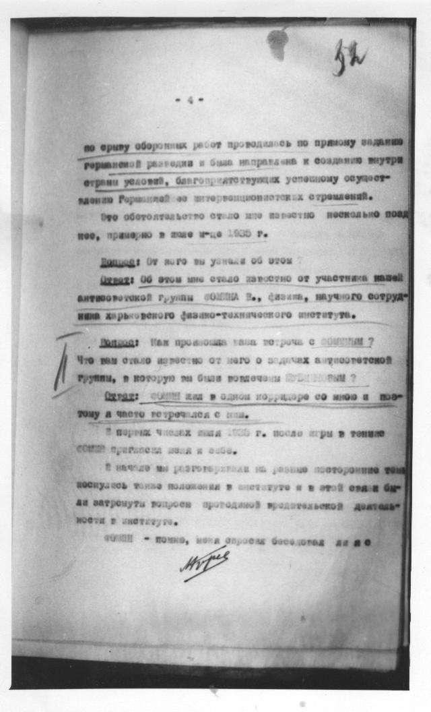
Чтение снимка, местами неуверенное. Сверьте со снимком.
32
- 4 -
по срыву оборонных работ проводилась по прямому заданию
германской разведки и была направлена к созданию внутри
страны условий, благоприятствующих успешному осуществ-
лению Германией ее интервенционистских стремлений.
Это обстоятельство стало мне известно несколько позд-
нее, примерно в мае м-це 1935 г.
Вопрос: От кого вы узнали об этом?
Ответ: Об этом мне стало известно от участника нашей
антисоветской группы ФОМИНА В., физика, научного сотруд-
ника харьковского физико-технического института.
Вопрос: Как произошла ваша встреча с ФОМИНЫМ?
Что вам стало известно от него о задачах антисоветской
группы, в которую вы были вовлечены [нрзб]?
Ответ: ФОМИН жил в одном коридоре со мною и по-
тому я часто встречался с ним.
В первых числах мая 1935 г. после игры в теннис
ФОМИН пригласил меня к себе.
В начале мы разговаривали на разные посторонние темы
коснулись также положения в институте и в этой связи бы-
ли затронуты вопросы проводимой вредительской деятель-
ности в институте.
ФОМИН — помню, меня спросил беседовал ли я с
[нрзб]
стр. 33
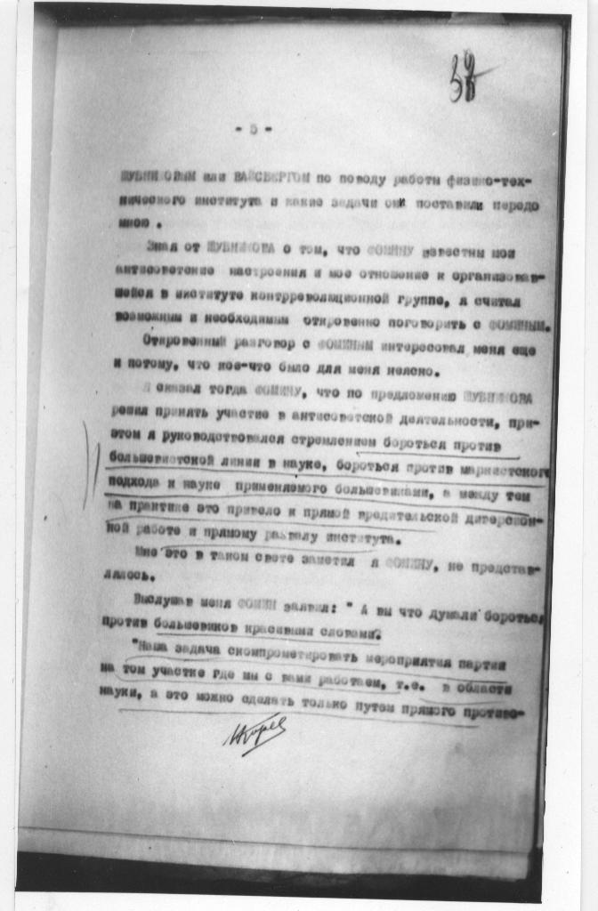
Чтение снимка, местами неуверенное. Сверьте со снимком.
33
- 5 -
ШУБНИКОВЫМ или ВАЙСБЕРГОМ по поводу работы физико-тех-
нического института и какие задачи они поставили передо
мною.
Зная от ШУБНИКОВА о том, что ФОМИНУ известны мои
антисоветские настроения и мое отношение к организо-
ванной в институте контрреволюционной группе, я считал
возможным и необходимым откровенно поговорить с ФОМИНЫМ.
Откровенный разговор с ФОМИНЫМ интересовал меня еще
и потому, что кое-что было для меня неясно.
Я сказал тогда ФОМИНУ, что по предложению ШУБНИКОВА
решил принять участие в антисоветской деятельности, при-
этом я руководствовался стремлением бороться против
большевистской линии в науке, бороться против марксистского
подхода к науке применяемого большевиками, а между тем
на практике это привело к прямой вредительской диверсион-
ной работе и прямому развалу института.
Мне это в таком свете заметил я ФОМИНУ, не представ-
лялось.
Выслушав меня ФОМИН заявил: „А вы что думали бороться
против большевиков красивыми словами?
Наша задача скомпрометировать мероприятия партии
на том участке где мы с вами работаем, т.е. в области
науки, а это можно сделать только путем прямого противо-
[нрзб]
стр. 34
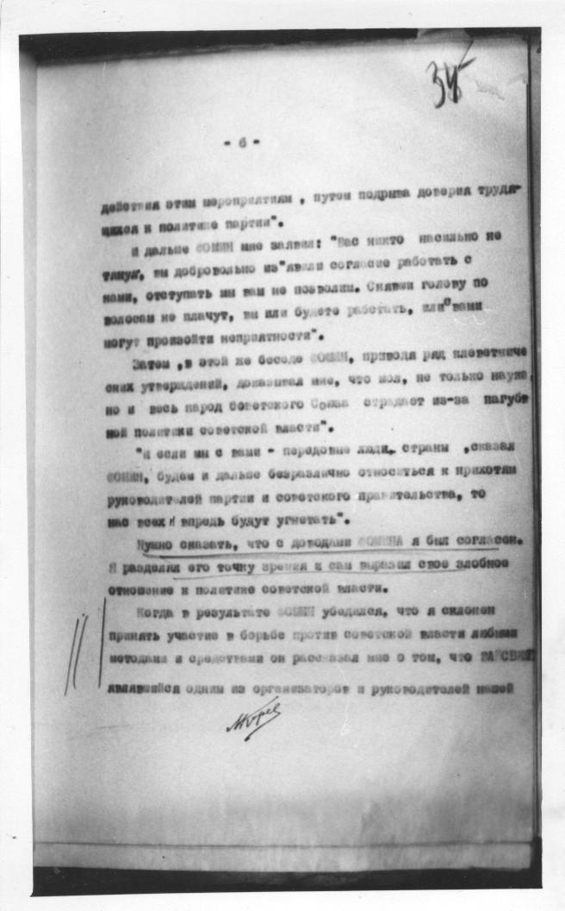
Чтение снимка, местами неуверенное. Сверьте со снимком.
34
- 6 -
действия этим мероприятиям, путем подрыва доверия трудя-
щихся к политике партии“.
И дальше ФОМИН мне заявил: „Вас никто насильно не
тянет, вы добровольно изъявили согласие работать с
нами, отступать мы вам не позволим. Снявши голову по
волосам не плачут, вы или будете работать, или с вами
могут произойти неприятности“.
Затем, в этой же беседе ФОМИН, приводя ряд клеветниче-
ских утверждений, доказывал мне, что мол, не только наука
но и весь народ Советского Союза страдает из-за [нрзб]
ной политики советской власти“.
„А если мы с вами — передовые люди страны, — сказал
ФОМИН, будем и дальше безразлично относиться к прихотям
руководителей партии и советского правительства, то
нас всех и впредь будут угнетать“.
Нужно сказать, что с доводами ФОМИНА я был согласен.
Я разделял его точку зрения и сам выразил свое злобное
отношение к политике советской власти.
Когда в результате ФОМИН убедился, что я склонен
принять участие в борьбе против советской власти любыми
методами и средствами он рассказал мне о том, что ВАЙСБЕРГ
являвшийся одним из организаторов и руководителей нашей
[нрзб]
стр. 35
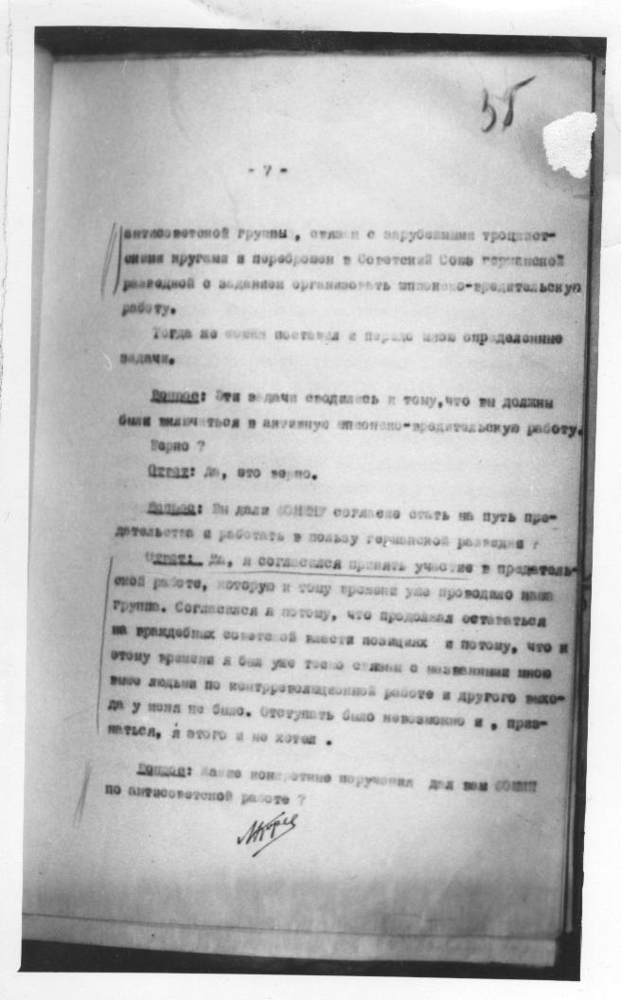
Чтение снимка, местами неуверенное. Сверьте со снимком.
35
- 7 -
антисоветской группы, связан с зарубежными троцкист-
скими кругами и [нрзб] в Советский Союз германской
разведкой с заданием организовать шпионско-вредительскую
работу.
Тогда же ФОМИН поставил и передо мной определенные
задачи.
Вопрос: Эти задачи сводились к тому, что вы должны
были включиться в активную шпионско-вредительскую работу.
Верно?
Ответ: Да, это верно.
Вопрос: Вы дали ФОМИНУ согласие стать на путь пре-
дательства и работать в пользу германской разведки?
Ответ: Да, я согласился принять участие в вредитель-
ской работе, которую к тому времени уже проводила наша
группа. Согласился я потому, что продолжал оставаться
на враждебных советской власти позициях и потому, что к
этому времени я был уже тесно связан с названными мною
выше людьми по контрреволюционной работе и другого выхо-
да у меня не было. Отступать было невозможно и, призна-
ться, я этого и не хотел.
Вопрос: Какие конкретные поручения дал вам ФОМИН
по антисоветской работе?
стр. 36
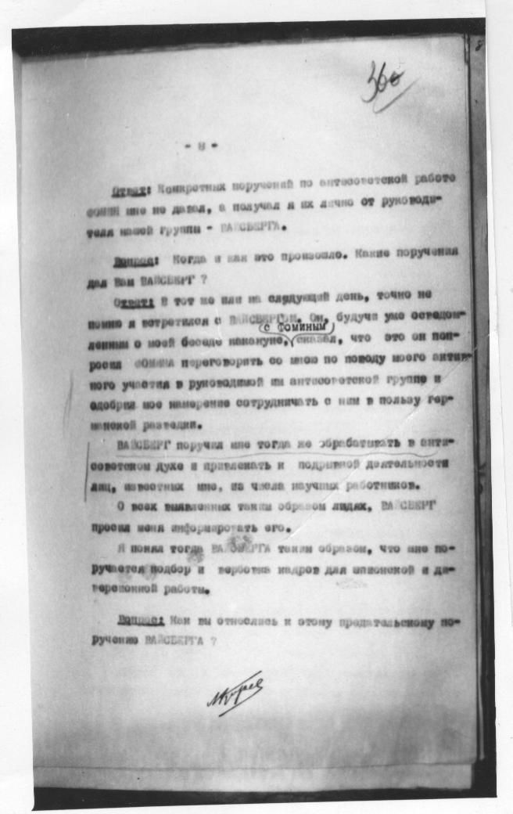
Чтение снимка, местами неуверенное. Сверьте со снимком.
36
- 8 -
Ответ: Конкретных поручений по антисоветской работе
ФОМИН мне не давал, а получал я их лично от руководи-
теля нашей группы — ВАЙСБЕРГА.
Вопрос: Когда и как это произошло. Какие поручения
дал вам ВАЙСБЕРГ?
Ответ: В тот же или на следующий день, точно не
помню я встретился с ВАЙСБЕРГОМ. Он, будучи уже осведом-
лен о моей беседе накануне с ФОМИНЫМ, сказал, что это он поп-
росил ФОМИНА переговорить со мной по поводу моего актив-
ного участия в руководимой им антисоветской группе и
одобрил мое намерение сотрудничать с ним в пользу гер-
манской разведки.
ВАЙСБЕРГ поручил мне тогда же обрабатывать в анти-
советском духе и привлекать к подрывной деятельности
лиц, известных мне, из числа научных работников.
О всех выявленных таким образом лицах, ВАЙСБЕРГ
просил меня информировать его.
Я понял тогда ВАЙСБЕРГА таким образом, что мне по-
ручается подбор и вербовка кадров для шпионской и ди-
версионной работы.
Вопрос: Как вы относились к этому предательскому по-
ручению ВАЙСБЕРГА?
стр. 37
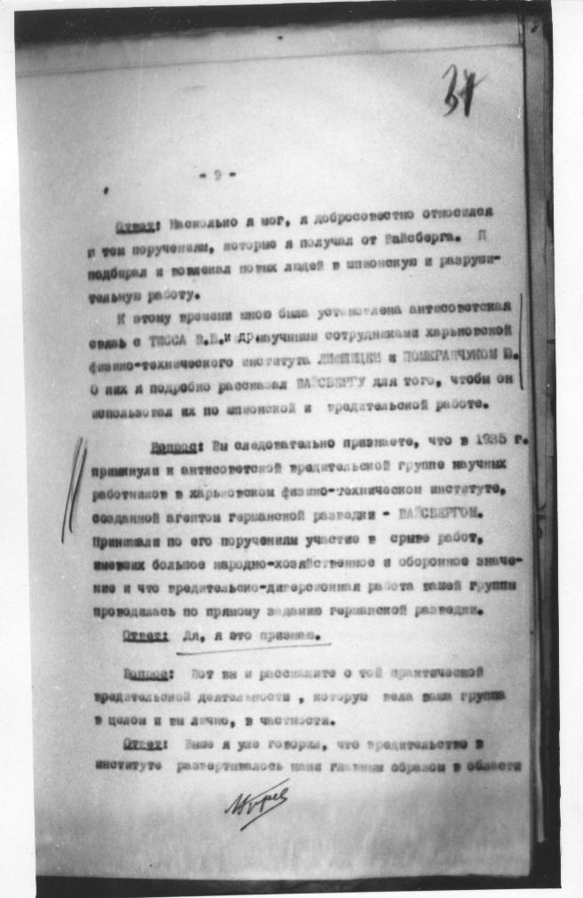
37
- 9 -
Ответ: Насколько я мог, я добросовестно относился
к тем поручениям, которые я получал от Вайсберга. Я
подбирал и посылал нужных людей в шпионскую и разруши-
тельную работу.
К этому времени мною была установлена антисоветская
связь с ТИССА В.В. и др. научными сотрудниками харьковской
физико-технического института ЛАНДАУ и ПОМЕРАНЧУКОМ В.
О них я подробно рассказывал ВАЙСБЕРГУ для того, чтобы он
использовал их по шпионской и вредительской работе.
Вопрос: Вы следовательно признаете, что в 1935 г.
примкнули к антисоветской вредительской группе научных
работников в Харьковском физико-техническом институте,
созданной агентом германской разведки - ВАЙСБЕРГОМ.
Принимали по его поручениям участие в срыве работ,
имевших большое народно-хозяйственное и оборонное значе-
ние и что вредительско-диверсионная работа вашей группы
проводилась по прямому заданию германской разведки.
Ответ: Да, я это признаю.
Вопрос: Вот вы и расскажите о той практической
вредительской деятельности, которую вела ваша группа
в целом и вы лично, в частности.
Ответ: Выше я уже говорил, что вредительство в
институте развертывалось нами главным образом в области
Корец
стр. 38
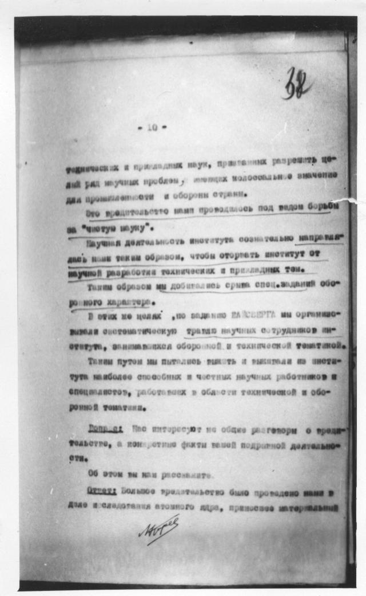
38
- 10 -
технических и прикладных наук, призванных разрешить це-
лый ряд научных проблем, имеющих колоссальное значение
для промышленности и обороны страны.
Это вредительство нами проводилось под видом борьбы
за "чистую науку".
Научная деятельность института сознательно направля-
лась нами таким образом, чтобы оторвать институт от
научной разработки технических и прикладных тем.
Таким образом мы добивались срыва спец.заданий обо-
ронного характера.
В этих же целях, по заданию ВАЙСБЕРГА мы организо-
вывали систематическую травлю научных сотрудников ин-
ститута, занимавшихся оборонной и технической тематикой.
Таким путем мы пытались выжить и выживали из инсти-
тута наиболее способных и честных научных работников и
специалистов, работавших в области технической и обо-
ронной тематики.
Вопрос: Нас интересуют не общие разговоры о вреди-
тельстве, а конкретные факты вашей подрывной деятельно-
сти.
Об этом вы нам расскажите.
Ответ: Большое вредительство было проведено нами в
деле исследования атомного ядра, принесшее материальный
Корец
стр. 39
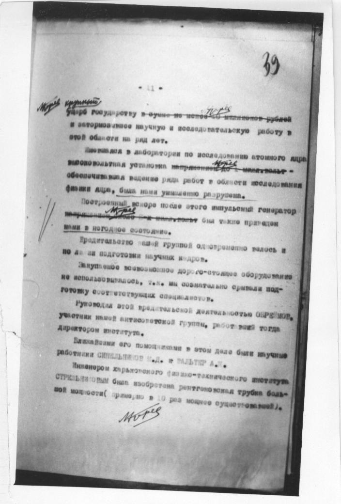
39
- 11 -
[на полях] крупный
удар государству [зачеркнуто: в сумме не менее [нрзб] миллионов рублей] [нрзб]
и затормозившее научную и исследовательскую работу в
этой области на ряд лет.
Имевшаяся в лаборатории по исследованию атомного ядра
высоковольтная установка напряжением до [зачеркнуто: [нрзб]] [нрзб] -
обеспечивавшая ведение ряда работ в области исследования
физики ядра, была нами умышленно разрушена.
Построенный вскоре после этого импульсный генератор
[зачеркнуто: напряжением [нрзб]] [нрзб] был также приведен
нами в негодное состояние.
Вредительство нашей группой одновременно велось и
по линии подготовки научных кадров.
Закупленное за границей дорого-стоящее оборудование
не использовалось, т.к. мы сознательно срывали под-
готовку соответствующих специалистов.
Руководил этой вредительской деятельностью ОБРЕИМОВ,
участник нашей антисоветской группы, работавший тогда
директором института.
Ближайшими его помощниками в этом деле были научные
работники СИНЕЛЬНИКОВ К.Д. и ВАЛЬТЕР А.К.
Инженером харьковского физико-технического института
СТРЕЛЬНИКОВЫМ была изобретена рентгеновская трубка боль-
шой мощности (примерно в 10 раз мощнее существующей).
Корец
стр. 40
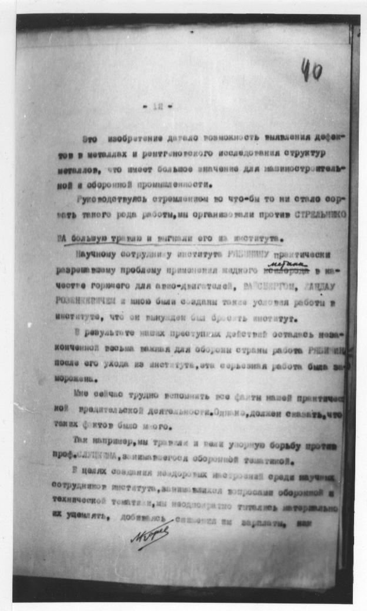
40
- 12 -
Это изобретение давало возможность выявления дефек-
тов в металлах и рентгеновского исследования структур
металлов, что имеет большое значение для машиностроитель-
ной и оборонной промышленности.
Руководствуясь стремлением во что-бы то ни стало сор-
вать такого рода работы, мы организовали против СТРЕЛЬНИКО
ВА большую травлю и выгнали его из института.
Научному сотруднику института РЯБИНИНУ практически
разрешавшему проблему применения медного [зачеркнуто: [нрзб]] [нрзб] в ка-
честве горючего для авиа-двигателей, ВАЙСБЕРГОМ, ЛАНДАУ
РОЗЕНКЕВИЧЕМ и мною были созданы такие условия работы в
институте, что он вынужден был бросить институт.
В результате наших преступных действий осталась неза-
конченной весьма важная для обороны страны работа РЯБИНИНА
после его ухода из института, эта серьезная работа была за-
морожена.
Мне сейчас трудно вспомнить все факты нашей практичес-
кой вредительской деятельности. Однако, должен сказать, что
таких фактов было много.
Так например, мы травили и вели упорную борьбу против
проф. СЛУЦКИНА, занимавшегося оборонной тематикой.
В целях создания нездоровых настроений среди научных
сотрудников института, занимавшихся вопросами оборонной и
технической тематики, мы неоднократно пытались материально
их ущемить, добиваясь снижения им зарплаты, нам
Корец
стр. 41
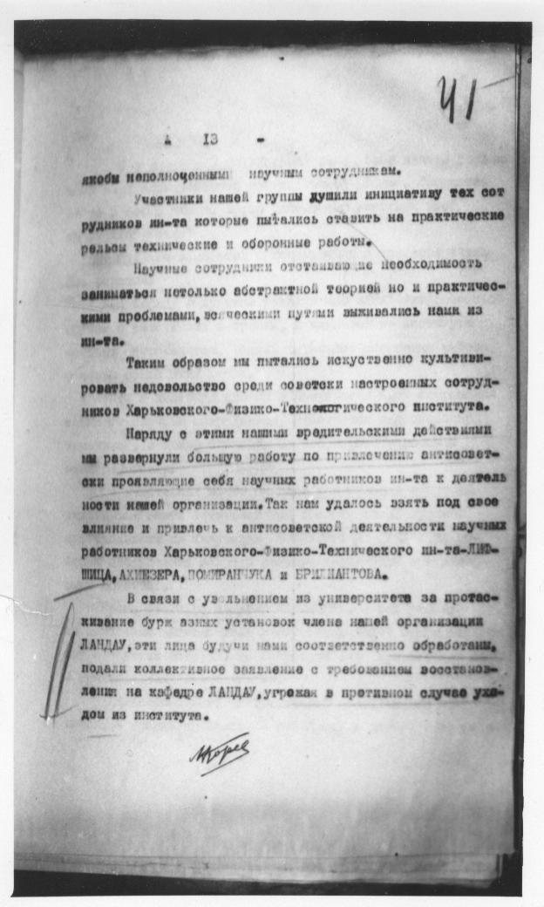
41
- 13 -
якобы неполноценными научными сотрудниками.
Участники нашей группы душили инициативу тех сот-
рудников ин-та которые пытались ставить на практические
рельсы технические и оборонные работы.
Научные сотрудники отстаивавшие необходимость
заниматься не только абстрактной теорией но и практичес-
кими проблемами, всяческими путями выживались нами из
ин-та.
Таким образом мы пытались искусственно культиви-
ровать недовольство среди советски настроенных сотруд-
ников Харьковского Физико-Технологического института.
Наряду с этими нашими вредительскими действиями
мы развернули большую работу по привлечению антисовет-
ски проявляющих себя научных работников ин-та к деятель
ности нашей организации. Так нам удалось взять под свое
влияние и привлечь к антисоветской деятельности научных
работников Харьковского Физико-Технического ин-та ЛИФ-
ШИЦА, АХИЕЗЕРА, ПОМЕРАНЧУКА и БРИЛЛИАНТОВА.
В связи с увольнением из университета за протас-
кивание буржуазных установок члена нашей организации
ЛАНДАУ, эти лица будучи нами соответственно обработаны,
подали коллективное заявление с требованием восстанов-
ления на кафедре ЛАНДАУ, угрожая в противном случае ухо-
дом из института.
Корец
стр. 42
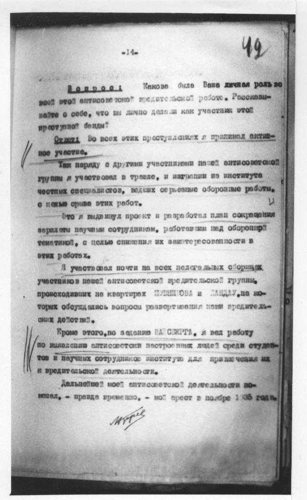
42
- 14 -
Вопрос: Какова была Ваша личная роль во
всей этой антисоветской вредительской работе. Рассказы-
вайте о себе, что вы лично делали как участник этой
преступной банды?
Ответ: Во всех этих преступлениях я принимал актив-
ное участие.
Так наряду с другими участниками нашей антисоветской
группы я участвовал в травле и изгнании из института
честных специалистов, ведших серьезные оборонные работы,
с целью срыва этих работ.
Это я выдвинул проект и разработал план сокращения
зарплаты научным сотрудникам, работавшим над оборонной
тематикой, с целью снижения их заинтересованности в
этих работах.
Я участвовал почти на всех нелегальных собраниях
участников нашей антисоветской вредительской группы,
происходивших на квартирах ШУБНИКОВА и ЛАНДАУ, на ко-
торых обсуждались вопросы развертывания нами вредитель-
ских действий.
Кроме этого, по заданию ВАЙСБЕРГА, я вел работу
по выявлению антисоветски настроенных людей среди студен-
тов и научных сотрудников института для привлечения их
к вредительской деятельности.
Дальнейшей моей антисоветской деятельности по-
мешал, - правда временно, - мой арест в ноябре 1935 года.
Корец
стр. 43
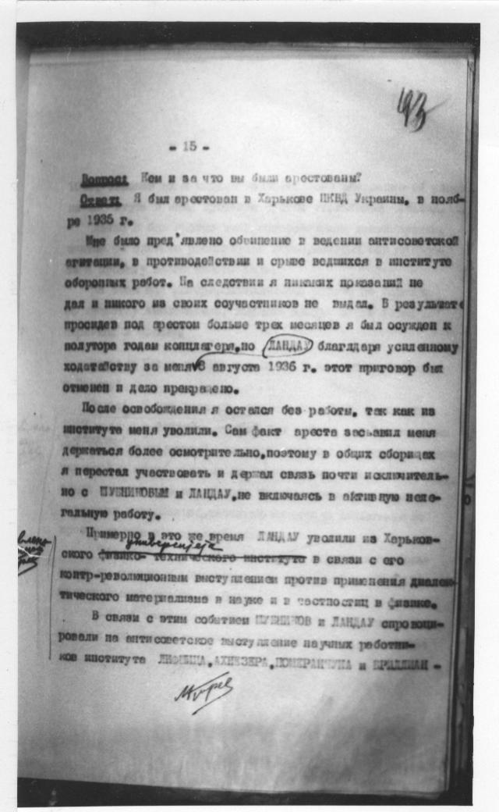
43
- 15 -
Вопрос: Кем и за что вы были арестованы?
Ответ: Я был арестован в Харькове НКВД Украины, в нояб-
ре 1935 г.
Мне было предъявлено обвинение в ведении антисоветской
агитации, в противодействии и срыве ведшихся в институте
оборонных работ. На следствии я никаких показаний не
дал и никого из своих соучастников не выдал. В результате
просидев под арестом больше трех месяцев я был осужден к
полутора годам концлагеря, но ЛАНДАУ благодаря усиленному
ходатайству за меня в августе 1936 г. этот приговор был
отменен и дело прекращено.
После освобождения я остался без работы, так как из
института меня уволили. Сам факт ареста заставил меня
держаться более осмотрительно, поэтому в общих собраниях
я перестал участвовать и держал связь почти исключитель-
но с ШУБНИКОВЫМ и ЛАНДАУ, не включаясь в активную неле-
гальную работу.
Примерно в это же время ЛАНДАУ уволили из Харьков-
ского [зачеркнуто: физико-технического института] университета в связи с его
контр-революционным выступлением против применения диалек-
тического материализма в науке и в частности в физике.
В связи с этим событием ШУБНИКОВ и ЛАНДАУ спровоци-
ровали на антисоветское выступление научных работни-
ков института ЛИФШИЦА, АХИЕЗЕРА, ПОМЕРАНЧУКА и БРИЛЛИАНТА -
[на полях] [нрзб]
Корец
стр. 44
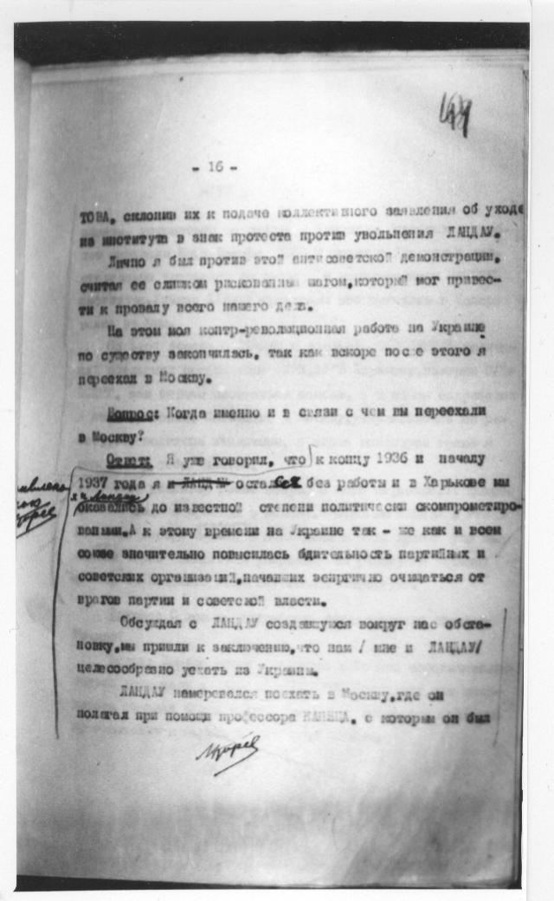
44
- 16 -
ТОВА, склонив их к подаче коллективного заявления об уходе
из института в знак протеста против увольнения ЛАНДАУ.
Лично я был против этой антисоветской демонстрации,
считая ее слишком рискованным шагом, который мог привес-
ти к провалу всего нашего дела.
На этом моя контр-революционная работа на Украине
по существу закончилась, так как вскоре после этого я
переехал в Москву.
Вопрос: Когда именно и в связи с чем вы переехали
в Москву?
Ответ: Я уже говорил, что к концу 1936 и началу
1937 года я [зачеркнуто: и ЛАНДАУ] остались без работы и в Харькове мы
[на полях] [нрзб] оказались до известной степени политически скомпрометиро-
ванными. А к этому времени на Украине так - же как и во всем
союзе значительно повысилась бдительность партийных и
советских организаций, начавших энергично очищаться от
врагов партии и советской власти.
Обсуждая с ЛАНДАУ создавшуюся вокруг нас обста-
новку, мы пришли к заключению, что нам / мне и ЛАНДАУ /
целесообразно уехать из Украины.
ЛАНДАУ намеревался поехать в Москву, где он
полагал при помощи профессора КАПИЦЫ, с которым он был
Корец
стр. 45
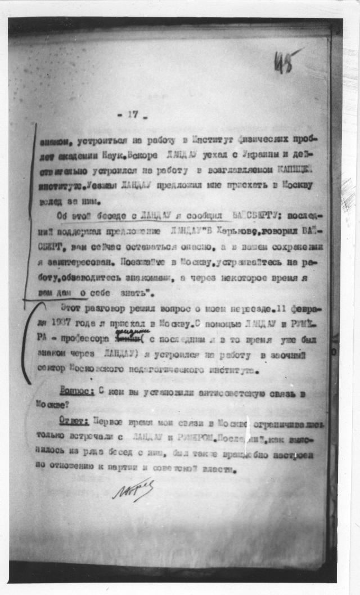
45
- 17 -
знаком, устроиться на работу в Институт физических проб-
лем Академии Наук. Вскоре ЛАНДАУ уехал с Украины и дей-
ствительно устроился на работу в возглавляемом КАПИЦЕЙ
институте. Затем ЛАНДАУ предложил мне приехать в Москву
вслед за ним.
Об этой беседе с ЛАНДАУ я сообщил ВАЙСБЕРГУ; послед-
ний поддержал предложение ЛАНДАУ. "В Харькове, говорил ВАЙ-
СБЕРГ, вам сейчас оставаться опасно, а в вашем сохранении
я заинтересован. Поезжайте в Москву, устраивайтесь на ра-
боту, обзаводитесь знакомыми, а через некоторое время я
вам дам о себе знать".
Этот разговор решил вопрос о моем переезде. 11 февра-
ля 1937 года я приехал в Москву. С помощью ЛАНДАУ и РУМЕ-
РА - профессора [нрзб] (с последним я в то время уже был
знаком через ЛАНДАУ) я устроился на работу в заочный
сектор Московского педагогического института.
Вопрос: С кем вы установили антисоветскую связь в
Москве?
Ответ: Первое время мои связи в Москве ограничивались
только встречами с ЛАНДАУ и РУМЕРОМ. Последний, как выяс-
нилось из ряда бесед с ним, был также враждебно настроен
по отношению к партии и советской власти.
Корец
стр. 46
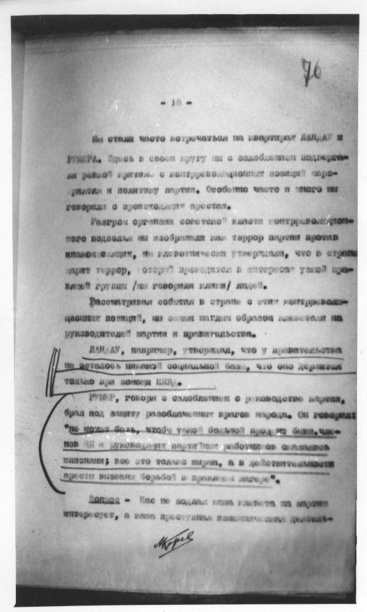
46
- 18 -
Мы стали часто встречаться на квартирах ЛАНДАУ и
РУМЕРА. Здесь в своем кругу мы с озлоблением подвергали
за резкой критике с контрреволюционных позиций меро-
приятия и политику партии. Особенно часто и много мы
говорили о происходящих арестах.
Разгром органами советской власти контрреволюцион-
ного подполья мы изображали как террор партии против
инакомыслящих, мы клеветнически утверждали, что в стране
царит террор, который проводится в интересах узкой пра-
вящей группы /мы говорили клики/ людей.
Рассматривая события в стране с этих контрреволю-
ционных позиций, мы самым низким образом клеветали на
руководителей партии и правительства.
ЛАНДАУ, например, утверждал, что у правительства
не осталось никакой социальной базы, что оно держится
только при помощи НКВД.
РУМЕР, говоря с озлоблением о руководстве партии,
брал под защиту разоблаченных врагов народа. Он говорил:
"Не может быть, чтобы такой большой процент был, чле-
нов ЦК и руководящих партийных работников оказались
шпионами; все это только ширма, а в действительности
арестованы борцы и преданные люди".
Вопрос: - Нас не [нрзб] ваши клеветы на партию
интересует, а ваша преступная практическая деятель-
Корец
стр. 47
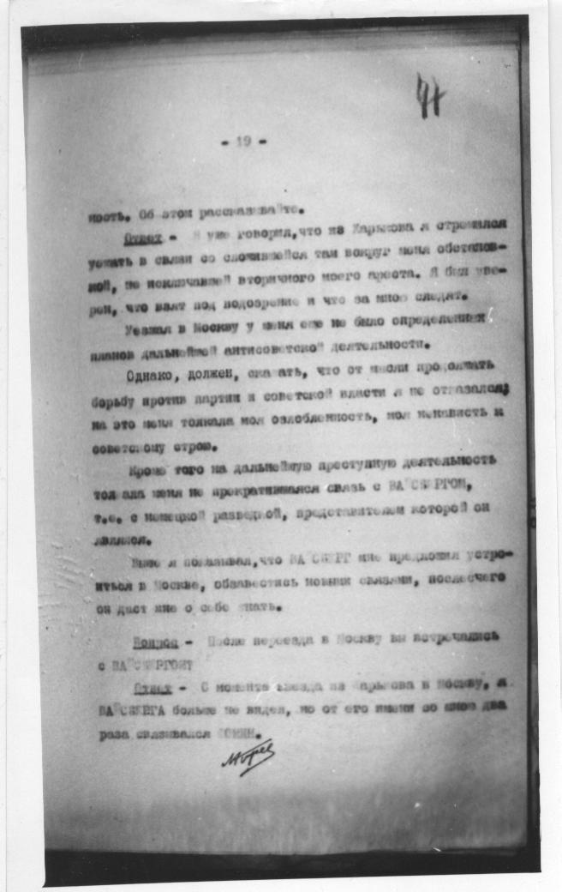
47
- 19 -
ность. Об этом рассказывайте.
Ответ: - Я уже говорил, что из Харькова я стремился
уехать в связи со сложившейся там вокруг меня обстанов-
кой, не исключавшей вторичного моего ареста. Я был уве-
рен, что вами под подозрение и что за мною следят.
Уезжая в Москву у меня еще не было определенных
планов дальнейшей антисоветской деятельности.
Однако, должен сказать, что от мысли продолжать
борьбу против партии и советской власти я не отказывался,
на это меня толкала моя озлобленность, моя ненависть к
советскому строю.
Кроме того на дальнейшую преступную деятельность
толкала меня не прекратившаяся связь с ВАЙСБЕРГОМ,
т.е. с немецкой разведкой, представителем которой он
являлся.
Выше я показывал, что ВАЙСБЕРГ мне предложил устро-
иться в Москве, обзавестись новыми связями, после чего
он даст мне о себе знать.
Вопрос: - После переезда в Москву вы встречались
с ВАЙСБЕРГОМ?
Ответ: - С момента заезда из Харькова в Москву, я
ВАЙСБЕРГА больше не видел, но от его имени со мною два
раза связывался ФОМИН.
Корец
стр. 48
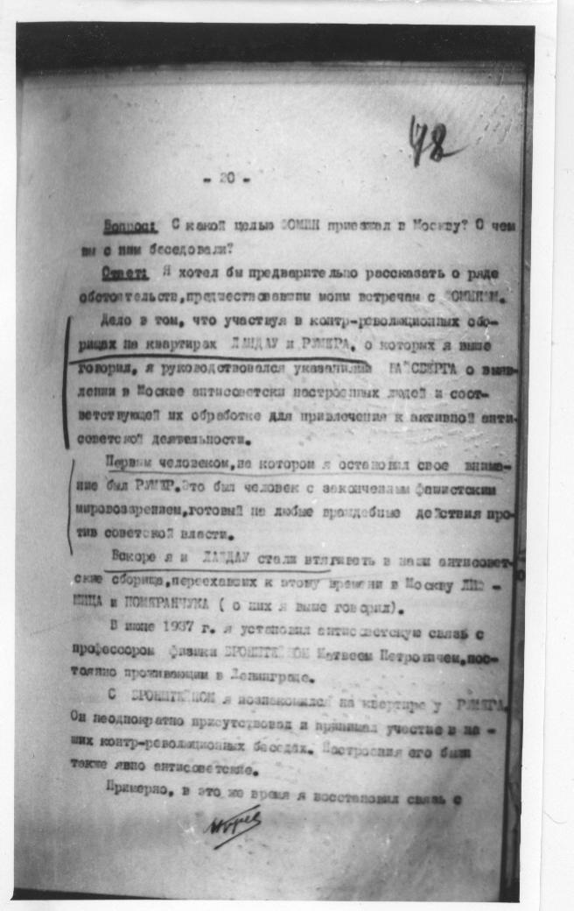
48
- 20 -
Вопрос: С какой целью ФОМИН приезжал в Москву? О чем
вы с ним беседовали?
Ответ: Я хотел бы предварительно рассказать о ряде
обстоятельств, предшествовавших моим встречам с ФОМИНЫМ.
Дело в том, что участвуя в контр-революционных сбо-
рищах на квартирах ЛАНДАУ и РУМЕРА, о которых я выше
говорил, я руководствовался указаниями ВАЙСБЕРГА о выяв-
лении в Москве антисоветски настроенных людей и соот-
ветствующей их обработке для привлечения к активной анти-
советской деятельности.
Первым человеком, на котором я остановил свое внима-
ние был РУМЕР. Это был человек с законченным фашистским
мировоззрением, готовый на любые враждебные действия про-
тив советской власти.
Вскоре я и ЛАНДАУ стали втягивать в наши антисовет-
ские сборища, переехавших к этому времени в Москву ЛИФ-
ШИЦА и ПОМЕРАНЧУКА (о них я выше говорил).
В июне 1937 г. я установил антисоветскую связь с
профессором физики БРОНШТЕЙНОМ Матвеем Петровичем, пос-
тоянно проживающим в Ленинграде.
С БРОНШТЕЙНОМ я познакомился на квартире у РУМЕРА.
Он неоднократно присутствовал и принимал участие в на-
ших контр-революционных беседах. Настроения его были
также явно антисоветские.
Примерно в это же время я восстановил связь с
Корец
стр. 49
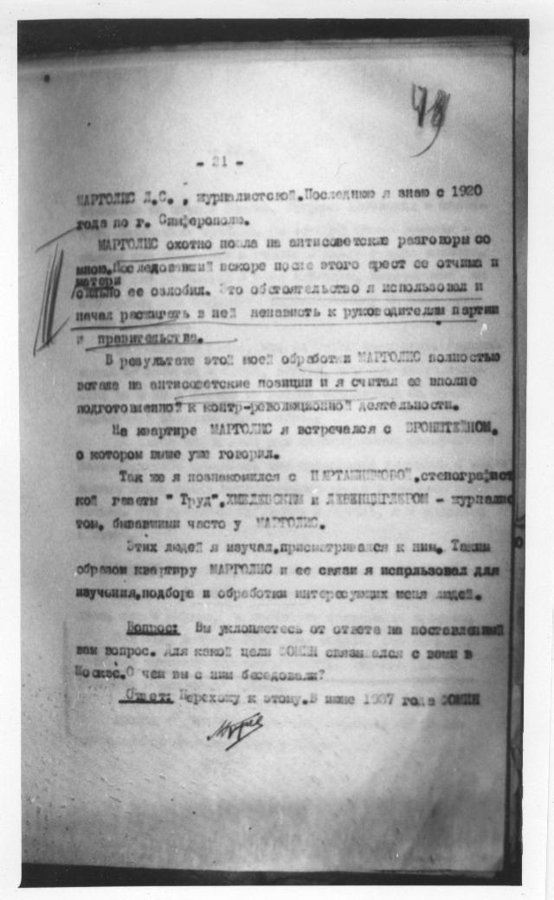
49
- 21 -
МАРГОЛИС Л.С., журналисткой. Последнюю я знаю с 1920
года по г. Симферополю.
МАРГОЛИС охотно пошла на антисоветские разговоры со
мною. Последовавший вскоре после этого арест ее отца и
[на полях] матери
сильно ее озлобил. Это обстоятельство я использовал и
начал растить в ней ненависть к руководителям партии
и правительству.
В результате этой моей обработки МАРГОЛИС полностью
встала на антисоветские позиции и я считал ее вполне
подготовленной к контр-революционной деятельности.
На квартире МАРГОЛИС я встречался с БРОНШТЕЙНОМ,
о котором выше уже говорил.
Так же я познакомился с ПАРТАШНИКОВОЙ, стенографист-
кой газеты "Труд", ХМЕЛЬНИЦКИМ и [нрзб] - журналис-
том, бывавшими часто у МАРГОЛИС.
Этих людей я изучал, присматривался к ним. Таким
образом квартиру МАРГОЛИС и ее связи я использовал для
изучения, подбора и обработки интересующих меня людей.
Вопрос: Вы уклоняетесь от ответа на поставленный
вам вопрос. Для какой цели ФОМИН связывался с вами в
Москве? О чем вы с ним беседовали?
Ответ: Перехожу к этому. В июне 1937 года ФОМИН
Корец
стр. 50
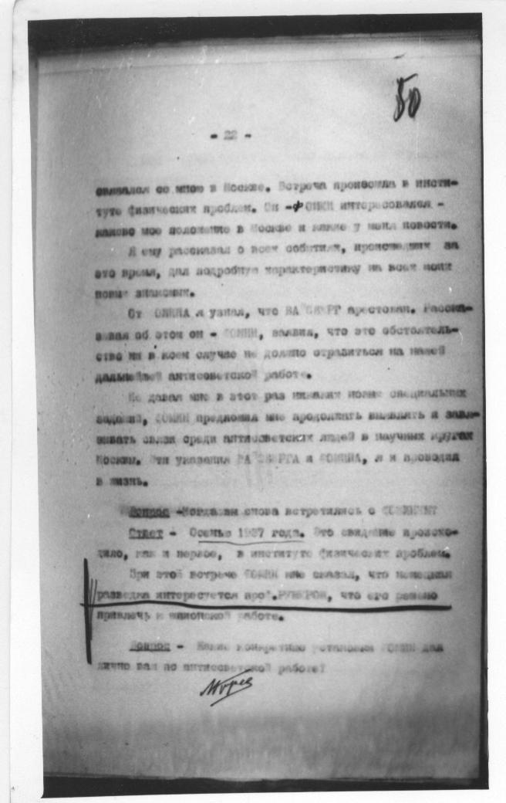
50
- 22 -
связывался со мною в Москве. Встречи происходили в инсти-
туте физических проблем. Он - ФОМИН интересовался -
каково мое положение в Москве и какие у меня новости.
Я ему рассказал о моем событии, происшедших за
это время, дал подробную характеристику на всех моих
новых знакомых.
От ФОМИНА я узнал, что ВАЙСБЕРГ арестован. Расска-
зывая об этом он - ФОМИН, заявил, что это обстоятель-
ство ни в коем случае не должно отразиться на нашей
дальнейшей антисоветской работе.
Не давая мне в этот раз никаких новых специальных
заданий, ФОМИН предложил мне продолжать выявлять и завя-
зывать связи среди антисоветских людей в научных кругах
Москвы. Эти указания ВАЙСБЕРГА и ФОМИНА, я и проводил
в жизнь.
Вопрос: Когда вы снова встретились с ФОМИНЫМ?
Ответ: - Осенью 1937 года. Это свидание происхо-
дило, как и первое, в институте физических проблем.
При этой встрече ФОМИН мне сказал, что немецкая
разведка интересуется проф. РУМЕРОМ, что его решено
привлечь к шпионской работе.
Вопрос: - Какие конкретные установки ФОМИН дал
лично вам по антисоветской работе?
Корец
стр. 51
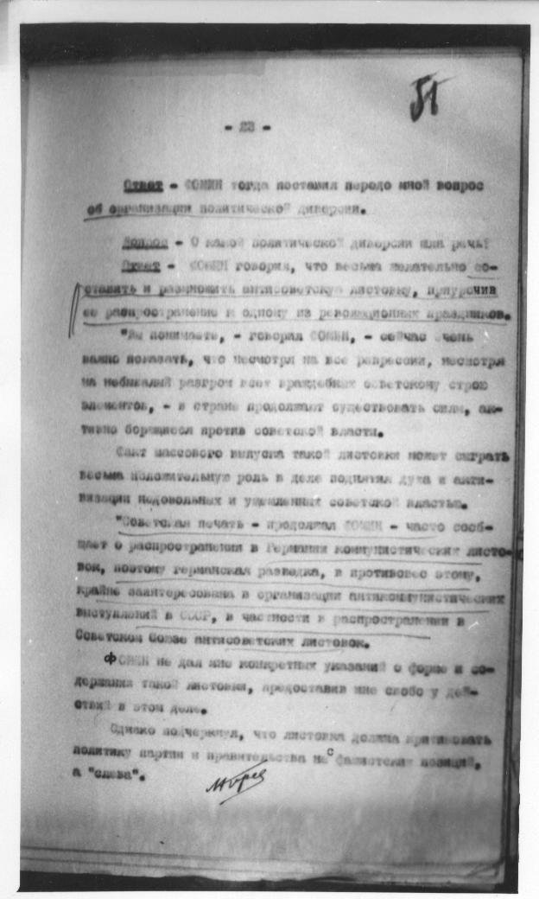
51
- 23 -
Ответ: - ФОМИН тогда поставил передо мной вопрос
об организации политической диверсии.
Вопрос: - О какой политической диверсии шла речь?
Ответ: - ФОМИН говорил, что весьма желательно со-
ставить и размножить антисоветскую листовку, [нрзб]
ее распространение и [нрзб] на революционных [нрзб].
"Вы понимаете, - говорил ФОМИН, - сейчас очень
важно показать, что несмотря на все репрессии, несмотря
на небывалый разгром всех враждебных советскому строю
элементов, - в стране продолжают существовать силы, ак-
тивно борющиеся против советской власти.
Сам массовый выпуск такой листовки может сыграть
весьма положительную роль в деле поднятия духа и акти-
визации недовольных и ущемленных советской властью.
"Советская печать - продолжал ФОМИН - часто сооб-
щает о распространении в Германии коммунистических листо-
вок, поэтому германская разведка, в противовес этому,
крайне заинтересована в организации антикоммунистических
выступлений в СССР, в частности в распространении в
Советском Союзе антисоветских листовок.
ФОМИН не дал мне конкретных указаний о форме и со-
держании такой листовки, предоставив мне свободу дей-
ствий в этом деле.
Однако подчеркнул, что листовка должна критиковать
политику партии и правительства не с фашистских позиций,
а с "слева".
Корец
стр. 52
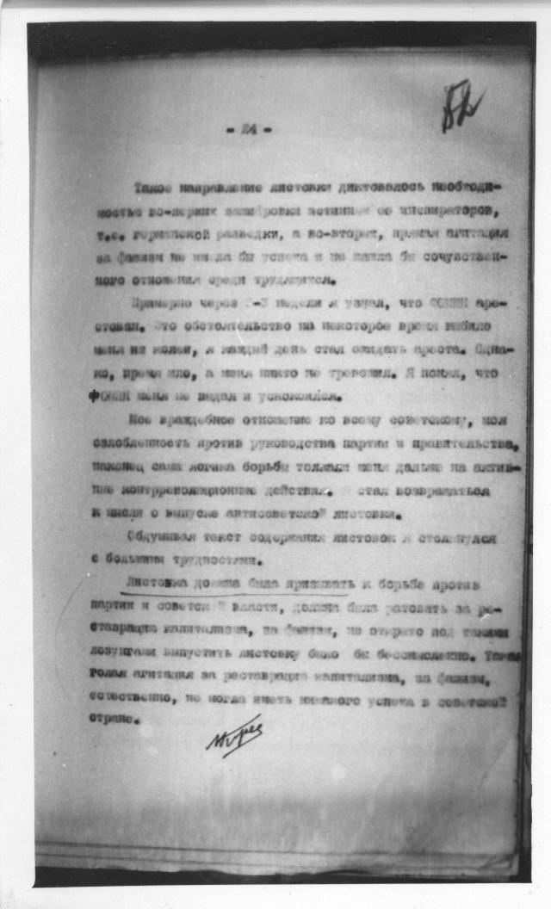
52
- 24 -
Такое направление листовок диктовалось необходи-
мостью во-первых замаскировать истинных ее инспираторов,
т.е. германской разведки, а во-вторых, прямая агитация
за фашизм не могла бы [нрзб] и не нашла бы сочувствен-
ного отношения среди трудящихся.
Примерно через 2-3 недели я узнал, что ФОМИН аре-
стован. Это обстоятельство на некоторое время выбило
меня из колеи, и каждый день стал ожидать ареста. Одна-
ко, время шло, а меня никто не тревожил. Я понял, что
ФОМИН меня не выдал и успокоился.
Мое враждебное отношение ко всему советскому, моя
озлобленность против руководства партии и правительства,
наконец сама логика борьбы толкали меня дальше на актив-
ные контрреволюционные действия. Я стал возвращаться
к мысли о выпуске антисоветской листовки.
Обдумывал текст содержания листовок и столкнулся
с большими трудностями.
Листовка должна была призывать к борьбе против
партии и советской власти, должна была ратовать за ре-
ставрацию капитализма, за фашизм, но открыто под такими
лозунгами выпустить листовку было бы бессмысленно. Такие
голые агитации за реставрацию капитализма, за фашизм,
естественно, не могли иметь никакого успеха в советской
стране.
Корец
стр. 53
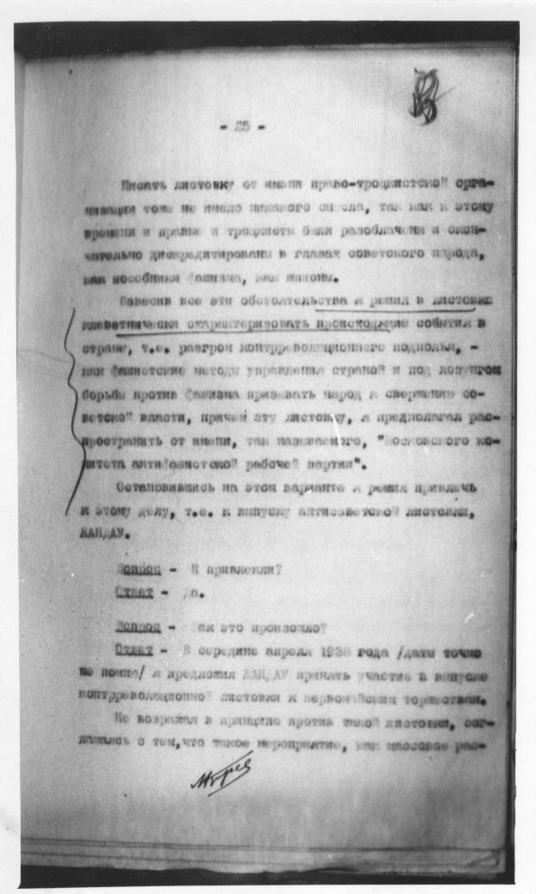
53
- 25 -
Писать листовку от имени право-троцкистской орга-
низации тоже не имело никакого смысла, так как к этому
времени и правые и троцкисты были разоблачены и окон-
чательно дискредитированы в глазах советского народа,
как пособники фашизма, как шпионы.
Взвесив все эти обстоятельства я решил в листовке
клеветнически охарактеризовать происходящие события в
стране, т.е. разгром контрреволюционного подполья, -
как фашистские методы управления страной и под лозунгом
борьбы против фашизма призвать народ к свержению со-
ветской власти, причем эту листовку, я предполагал рас-
пространить от имени, так называемого, "Московского ко-
митета антифашистской рабочей партии".
Остановившись на этом варианте я решил привлечь
к этому делу, т.е. к выпуску антисоветской листовки,
ЛАНДАУ.
Вопрос: - И привлекли?
Ответ: - Да.
Вопрос: - Как это произошло?
Ответ: - В середине апреля 1938 года /даты точно
не помню/ я предложил ЛАНДАУ принять участие в выпуске
контрреволюционной листовки к первомайским торжествам.
Не возражая в принципе против такой листовки, сог-
лашаясь с тем, что такое мероприятие, как массовое раз-
Корец
стр. 54
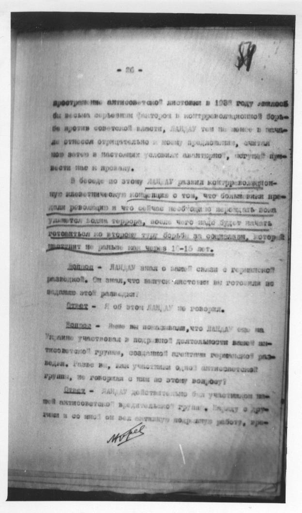
54
- 26 -
пространение антисоветской листовки в 1938 году явилось
бы весьма серьезным фактором в контрреволюционной борь-
бе против советской власти, ЛАНДАУ тем не менее в нача-
ле отнесся отрицательно к моему предложению, считая
мое дело в настоящих условиях авантюрой, могущей при-
вести нас к провалу.
В беседе по этому ЛАНДАУ развил контрреволюцион-
ную клеветническую концепцию о том, что большевики пре-
дали революцию и что сейчас необходимо переждать пока
утихнет волна террора, после чего надо будет начать
готовиться ко второму туру борьбы за социализм, который
наступит не раньше чем через 15-16 лет.
Вопрос: - ЛАНДАУ знал о вашей связи с германской
разведкой? Он знал, что выпуск листовки вы готовили по
заданию этой разведки?
Ответ: - Я об этом ЛАНДАУ не говорил.
Вопрос: - Выше вы показывали, что ЛАНДАУ еще на
Украине участвовал в подрывной деятельности вашей ан-
тисоветской группы, созданной агентом германской раз-
ведки. Разве вы, как участники одной антисоветской
группы, не говорили с ним по этому вопросу?
Ответ: - ЛАНДАУ действительно был участником на-
шей антисоветской вредительской группы. Наряду с дру-
гими и со мной он вел активную подрывную работу, вре-
Корец
стр. 55
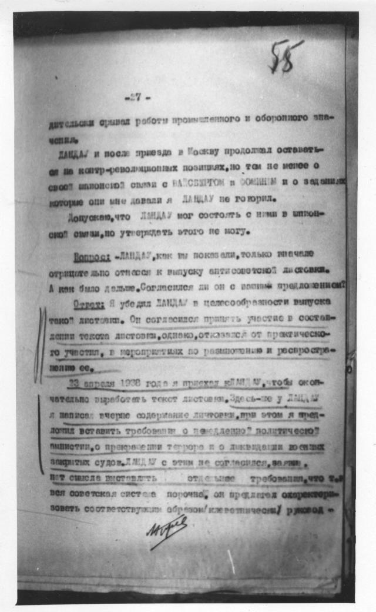
55
- 27 -
дительски срывал работы промышленного и оборонного зна-
чения.
ЛАНДАУ и после приезда в Москву продолжал оставать-
ся на контр-революционных позициях, но тем не менее о
своей шпионской связи с ВАЙСБЕРГОМ и ФОМИНЫМ и о заданиях
которые они мне давали я ЛАНДАУ не говорил.
Допускаю, что ЛАНДАУ мог состоять с ними в шпион-
ской связи, но утверждать этого не могу.
Вопрос: - ЛАНДАУ, как вы показали, только вначале
отрицательно отнесся к выпуску антисоветской листовки.
А как было дальше. Согласился ли он с вашим предложением?
Ответ: Я убедил ЛАНДАУ в целесообразности выпуска
такой листовки. Он согласился принять участие в состав-
лении текста листовки, однако, отказался от практическо-
го участия в мероприятиях по размножению и распростра-
нению ее.
23 апреля 1938 года я приехал к ЛАНДАУ, чтобы окон-
чательно выработать текст листовки. Здесь-же у ЛАНДАУ
я написал вчерне содержание листовки, при этом я пред-
ложил вставить требования о немедленной политической
амнистии, о прекращении террора и о ликвидации военных
[нрзб] судов. ЛАНДАУ с этим не согласился, заявив,
нет смысла выставлять отдельные требования, что так
как советская система порочна, он предложил охарактери-
зовать соответствующим образом /клеветнически/ руковод-
Корец
стр. 56
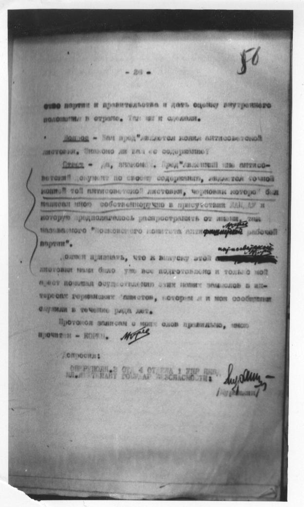
56
- 28 -
ство партии и правительства и дать оценку внутреннего
положения в стране. Так же и сделали.
Вопрос: - Вам предъявляется копия антисоветской
листовки. Знакомо ли вам ее содержание?
Ответ: - Да, знакомо. Предъявленный мне антисо-
ветский документ по своему содержанию является точной
копией той антисоветской листовки, черновик которой был
написан мною собственноручно в присутствии ЛАНДАУ и
которую предполагалось распространить от имени, так
называемого "Московского комитета [зачеркнуто: антифашистской] [нрзб] рабочей
партии".
[зачеркнуто: [нрзб]] [нрзб] должен признать, что к выпуску этой
листовки нами было уже все подготовлено и только мой
арест помешал осуществлению этих наших замыслов в ин-
тересах германских фашистов, которым я и мои сообщники
служили в течение ряда лет.
Протокол записан с моих слов правильно, мною
прочитан - КОРЕЦ.
Корец
Допросил:
ОПЕРУПОЛНОМОЧЕННЫЙ 3 ОТД. 4 ОТДЕЛА 1 УПР. НКВД
МЛ. ЛЕЙТЕНАНТ ГОСУД. БЕЗОПАСНОСТИ
[нрзб]
/[нрзб]/
Текст снят со снимков дела. Неразобранные слова отмечены [нрзб]. Там, где страница слишком бледная, оставлен только снимок.